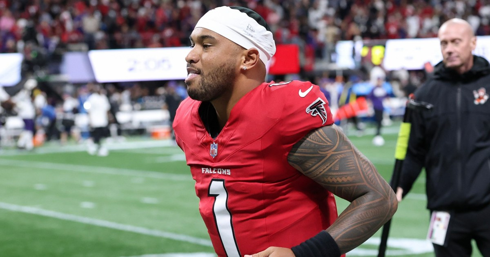

Falcons release Tua Tagovailoa — the Week 1 starter who threw three passes all season
Atlanta released Tua Tagovailoa on Saturday, ending a Falcons stint that began with him winning the starting job in camp and ended with a single regular-season cameo — an overtime interception against Baltimore.

Disclosure: this post contains affiliate links. I earn a commission on qualifying purchases.
The release
Tua Tagovailoa is on waivers again. The Atlanta Falcons released the veteran quarterback on Saturday, the team announced, a day before their game at the Minnesota Vikings. ESPN's Adam Schefter first reported the move, and theScore reported that Tagovailoa and the Falcons had agreed to part ways, per Schefter and NFL Network's Ian Rapoport.
General manager Ian Cunningham framed it as a mutual parting. "Tua came to Atlanta to compete, and he conducted himself with character and graciousness throughout his time here," Cunningham said in the team's statement. "After thoughtful conversations with Tua's representatives, we felt this was the best path forward. We wish Tua and his family nothing but the best."
It is the second time this calendar year that a team has cut him. Miami released Tagovailoa in the offseason after six seasons, and Atlanta signed him in March to a one-year deal worth $1.2 million — a cheap flier on a former Pro Bowl starter, taken to push Michael Penix Jr. in camp.
The strangest Falcons tenure in recent memory
For a few weeks in August, the flier looked like it might pay off. Tagovailoa won the competition outright: the Falcons named him their starting quarterback for Week 1 coming out of training camp, ahead of Penix. He had gone 10-of-13 for 117 yards across two preseason games, and Atlanta's opener against Pittsburgh was supposed to be his second act.
It never happened. Tagovailoa hurt his oblique in practice in the days before the opener and was forced out of the lineup, and Penix took the job back. By the time Tagovailoa was healthy, the depth chart had hardened around him — and when veteran Andy Dalton joined the Falcons in October, Atlanta was carrying four quarterbacks, one more than any team needs.
Three passes, one interception
Tagovailoa's entire regular season in Atlanta fits in one paragraph. His lone appearance came on October 11 against Baltimore, when he relieved a banged-up Penix with 27 seconds left in regulation and completed his first pass for 14 yards. Atlanta had blown a 23-15 lead in the final minutes, and in overtime, after the Ravens scored to go up by a touchdown, Tagovailoa hit Drake London for 20 yards — then, with a clean pocket, threw his next pass straight to safety Kyle Hamilton. Game over, 30-23, and the only snaps of his Falcons career ended with the interception that sealed the loss.
That was it. He never took another regular-season snap for Atlanta, and he spent the rest of the fall as the third quarterback on the depth chart, behind Penix and Dalton and ahead of undrafted rookie Jack Strand — the developmental prospect the Falcons chose to keep over him.
What happens now
Tagovailoa, 28 and in his seventh NFL season, goes through the waiver system. Any team can claim him; if nobody does, he becomes an unrestricted free agent who can sign anywhere.
The résumé a claiming team would be buying is real, even if the last two years have dimmed it: a former No. 5 overall draft pick with 79 career games and 76 starts, 18,200 passing yards, 120 touchdowns against 60 interceptions, and a 96.2 career passer rating, almost all of it built in Miami. Falcons Wire noted it is hard to imagine him staying out of work for long — the league always needs backup quarterbacks, and he will not be expensive. But he has now been released twice in nine months, and the next job, if it comes, will be as a backup competing to stay on a roster, not as anyone's Week 1 starter.
Atlanta, meanwhile, goes to Minnesota with three quarterbacks: Penix, set to make his ninth start of the season on Sunday at U.S. Bank Stadium with a 1 p.m. ET kickoff, plus Dalton and Strand. The Tua experiment cost the Falcons almost nothing. It also produced almost nothing — three passes, one of them to the other team, and a Saturday roster move on the way out.
Sources
• Atlanta Falcons release QB Tua Tagovailoa (Atlanta Falcons, official)
• Falcons release QB Tua Tagovailoa ahead of Vikings game (Falcons Wire / USA Today)
• Report: Tua, Falcons agree to part ways (theScore)
• Falcons release quarterback Tua Tagovailoa (Wire Report)
• Tua Tagovailoa's disastrous cameo dooms Falcons in collapse against Ravens (New York Post)
• Tua Tagovailoa career statistics (Pro Football Reference)
Gear up: Fanatics